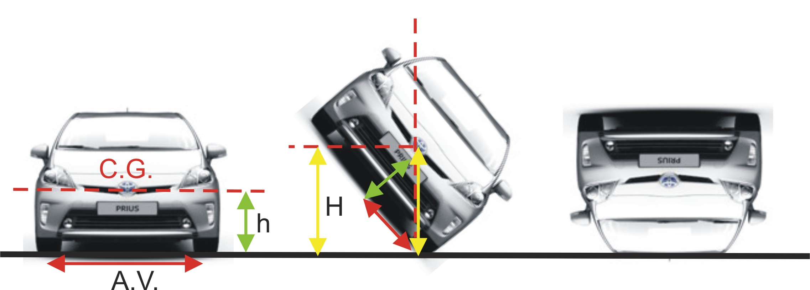

Menú Principal
v0.1.2025-08-20T15:00
VELOCIDAD LÍMITE DE UN VEHÍCULO PARA QUE SE PRODUZCA SU VUELCO
Introducir el ancho de vía (A.V) del vehículo en milímetros
Introducir la altura (h) del centro de gravedad (C.G.) del vehículo en metros
Introducir el radio de la curva en metros
Introducir el ángulo del peralte de la curva en grados
Calcular
